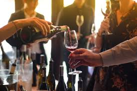

ABOUT LIBBY'S WINERY
Libby's Winery is a worldclass winery producing and providing the best wine in the region. At our winery we have pressers that press matured and well caltured grape fruits to produce the tastiest and aromatic wine.
We as a company saw a gap and we sought to bridge it. Besides the freshly pressed wine from our well caltured grapes, our matured wine in our barels kept under the most optimal conditions, we also provide exotic wine from other producers worldwide. We work with and import wine from countries like South Africa, Italy, France, Argentina, Chile, spain e.t.c
SERVICES OFFEREED
At Libby's Winery we pride ourselves in providing amazing experiences for our wide variety of clients
Below are some of the services that we provide
- Wine pressing
- wine tasting
- Amazing wedding venue
- Photo shoot spot
Wine Pressing

Just as the name suggests, we do press wine from the richest and finest grapes from our own vineyard, We also allow the wine to mature in our barels within the winery so that by the time it gets to our clients it has the richest taste and aroma
Wine Tasting
At our winery we give our clients and potential clients a chance to come partake in the bestwine tasting experiences. We hold our wine tasting annually, and the event takes place within the month of October. We allow the clients to sample our well matured wine as well as indulge their tastebuds in the sampling of new wine from our worldwide best producers you never want to miss this opportunity
Amazing Wedding Venue
Our 50 Acre of land gives us vast space to both produce the tastiest wine and create a beautiful environment for those who want to get married. Our green environment provides the perfect backdrop every bride would want in their wedding album.
Come and allow us make the most beautiful moment of your life memorable
Photo Shoot Spot
We do not limit our services to the newlyweds. We have a very beautiful and serene space. We conduct and produce high quality photos for friends, lovers, family e.t.c who want to come document their time on our property.
Below are a variety of the international wine brands that we stock
Bruce Jack Shiraz - South Africa

Bruce Jack is the best Shiraz that you can ever come across,
with a very rich body and Aroma, you can
never go wrong,
and our prices are very friendly
Montepulciano d’Abruzzo - Italy

This is one of the best Italian Reds. Its deep ruby red
color is unique and makes it recognizable
immediately, it has hints of licorice in
its scent, which also carries images of red fruits,
cranberries
in particular. It is a full bodied and well structured wine.
Bourgogne Pinot Noir - France

This particular pinot wine exhibits the characteristics of the great red Burgundies.
It has a resplendent
colour combining grace with vigour and associating strength
with finesse. On the palate fresh
raspberries are in evidence when the wine is
young.
CONTACTS
- 3245 Rongai,
- Phone 0721113225
- info@libby's.com
Main Offices:
TASTING ROOM HOURS
Wenesday to Sunday: Noon - 7:00pm